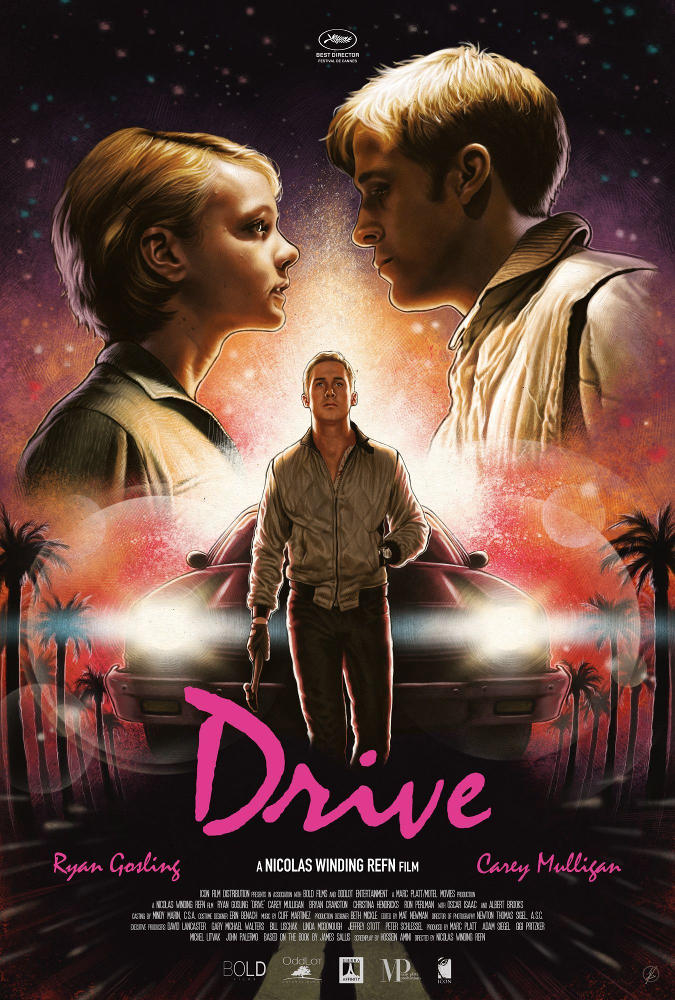

Drive

Sinopse
Durante o dia um motorista (Ryan Gosling) trabalha como mecânico e dublê em filmes de Hollywood, enquanto que à noite ele presta serviços para a máfia. Ele é vizinho de Irene (Carey Mulligan), que é casada e tem um filho com Standard (Oscar Isaac). Percebendo a situação difícil de Standard, que saiu há pouco tempo da prisão, o motorista o convida para realizar um assalto. Só que o golpe dá errado, o que coloca em risco as vidas do motorista, Irene e seu filho.